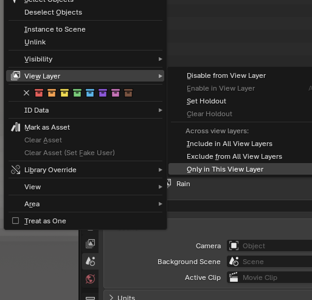
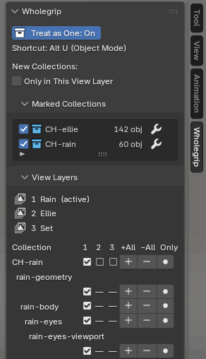

Wholegrip reference
Every detail of Wholegrip's four parts, for after it is installed. The short version, with the install steps, is the quick start; the same text is inside the download as README.md. Back to the Wholegrip product page.
Wholegrip works only on the collections you mark. Every other click stays plain Blender.
1. Mark a collection
Do either of these:
- In the Outliner, right-click a collection > Treat as One. With several collections selected, all of them are marked.
- Go to Properties > Collection tab > Wholegrip and tick Treat as One. Properties shows the collection that is active in the Outliner, so click the collection there first.
A marked collection turns blue in the Outliner, so you can see which ones are marked; unmarking takes the colour off. A colour you gave a collection yourself is never changed. Change the colour, or turn it off, in Edit > Preferences > Add-ons > Wholegrip > Outliner Color.

Then, in Object Mode in the 3D Viewport:
- Click any part: the whole collection is selected, child collections included, and the part you clicked becomes active.
- Tweak tool: press any part and drag. The whole collection moves; whatever is behind the part, such as the floor, stays where it is.
- Box drag (Select Box tool, or B): every marked collection the box touches is taken whole. The tool's header mode applies; Shift adds, Ctrl subtracts.
- Shift+click adds or removes the whole collection.
- Ctrl+click on a part of a marked collection picks just the part under the cursor; Ctrl+Shift+click adds or removes just that part. Elsewhere Ctrl+click is Blender's own.
- Shift+D on a whole marked collection puts the copy in a new collection of its own: same name plus a number, marked Treat as One, with its own copy of the collection's modifiers and the same view-layer settings. The copy follows the pointer, as with Blender's Shift+D, and one Ctrl+Z takes it back. Alt+D does the same with shared mesh data. On a single part, Shift+D is Blender's own and the copy stays in the part's collection.
- Alt+U or the Treat as One: On / Off header button turns all of this off and on. The keys can be changed in the add-on preferences, where each row says what it does (“Select a whole collection”, “Select one part”) with its key beside it, grouped by tool.
When an object is in several marked collections, the deepest one wins and the status bar names the other. A part that sits directly in a marked parent (a table in a marked “Dining”) selects the whole parent; mark its own collection to click it alone. Hidden, disabled and unselectable objects are left alone, as in Blender.
A click on a part of a collection that is not wholly selected always takes that collection, even on the very spot you just Ctrl+clicked. Once the whole collection is selected, clicking the very same spot again goes on to the object behind, as Blender's own click does: a second Shift+click on exactly the same pixel can add the floor rather than remove the chair. Move the pointer a few pixels, or click another part.
2. Collection Modifiers
Quickest: in the sidebar's Wholegrip tab (N), click the wrench on the collection's row, and its Collection Modifiers open in a popup over the viewport. The same panel is in Properties > Collection. Properties shows the collection that is active in the Outliner, so click the collection there first. The panel sits under Blender's Exporters panel (above Line Art and Custom Properties). In it, open Collection Modifiers and click Add Modifier; type to search, as in Blender's own menu. Blender puts an add-on's panels after its own there; to keep Wholegrip at the top, drag its header by the grip at its right end (::::) to the top of the tab, and Blender keeps that order in the file. On a collection that is not marked yet, a grey line under the checkbox says what ticking it does.

The panel on a five-part rocket (picture, full size).
Blender's Bevel starts at a width of 0.1 m, as it does on any object, which is a lot on thin furniture parts: type the width you want (0.005 to 0.02 m suits most furniture) right after adding it.
- Each modifier added there goes to the bottom of every member's stack, named after the collection, such as Bevel ‹Chair›. Lights, cameras and empties are skipped: once there is a modifier, one line says how many (“1 light skipped”), and hovering it names them.
- Each box has the header of Blender's own modifier panel: the name, the Edit Mode, viewport and render toggles, a ⌄ menu and a ✕ (remove from every member). The menu has Apply (this modifier on every member), Duplicate, Move to First, Move Up, Move Down, Move to Last and Remove; a move that cannot happen is greyed out. The settings use Blender's own labels (a Bevel's width is Amount).
- Change a value in the panel and every member follows. Renaming, moving, toggling or removing does the same everywhere.
- For Geometry Nodes, the box has Blender's own node-group field: pick a node group, or press New in it for a new one; the node group and its inputs stay in step.
- Objects you move into the collection get the stack. Objects you move out lose it. An object's own modifiers stay where they are, and vertex-group fields stay per object.
- A copy you edit directly on one object keeps your edit through undo and reopening. The next change you make to that modifier in the panel writes the panel's value over it.
- Apply to All applies what you see in the viewport. Modifiers that are off in the viewport are kept on the object, and the report names them. Remove from All takes the collection's modifiers off every member. Both ask first, saying how many modifiers and members they will change; Ctrl+Z undoes them.
3. View layers
In the Outliner, right-click one or more collections > View Layer. Under Blender's own entries (Disable and Enable act on the active view layer only), three more sit under the label Across view layers:
- Include in All View Layers;
- Exclude from All View Layers;
- Only in This View Layer: included in the active view layer, excluded in the others.

The View Layer menu with Wholegrip's three entries (picture, full size).

If a parent collection is excluded in some view layer, Wholegrip leaves the parent alone and leaves the collection out of that layer too, as Blender does when you exclude a parent; the status bar says where it was included and where it was left out. To include it there, select the parent as well. An option, off by default, in the sidebar or the add-on preferences, makes new collections start in the active view layer only; collections you append keep the state they arrive with.
4. Sidebar
Press N in the 3D Viewport and open the Wholegrip tab. It holds:
- the switch (Treat as One: On / Off, the same toggle as in the 3D Viewport header) and the new-collection option; with nothing marked yet, a line first says how to mark a collection;
- your marked collections, each with a Treat as One checkbox, its object count and a wrench with its number of collection modifiers, in columns that line up. A click on a name selects that collection. The highlighted row is the marked collection selected whole, however you selected it; with one part, several collections or nothing selected, no row is highlighted. The wrench opens its Collection Modifiers in a popup, with Apply to All and Remove from All on one row above the boxes. Each icon has the collection's Outliner colour;
- a grid of every collection against every view layer. The columns are numbered, and the key above the grid gives each number its view-layer name, the active one marked. A ticked cell means included in that view layer; a dash (—) instead of a checkbox means the collection's parent is excluded there; hover it to see which parent. When the sidebar is narrow, each name gets a line of its own above its checkboxes. The three buttons at the end of each row, headed +All, −All and Only, are the same actions as in the Outliner.

The Wholegrip tab at Blender's default sidebar width (picture, full size).

Limits
- Objects inside a linked or instanced collection are left alone: Wholegrip does not edit linked or library-overridden data.
- No Edit Mode across members and no group pivot.
- Only modifiers are kept in step. Across view layers, only include and exclude. One scene at a time.
- Circle and Lasso selection stay plain Blender. If you switch between left- and right-click select, disable and re-enable Wholegrip so the click keys follow.
Privacy
Wholegrip makes no network calls and sends nothing anywhere. It changes only the collections, modifiers and view-layer settings you act on, plus its own flags saved in the .blend file.
Support
Email support@ochrestack.com with your Blender version, your operating system and, if you can, a small .blend file that shows the problem.
Pictures: Blender 5.2.3 with Wholegrip 1.1.9. Characters: Rain Rig (CC) Blender Foundation | studio.blender.org, and Ellie (CC) Blender Foundation | studio.blender.org, used under CC BY 4.0; not included with Wholegrip.